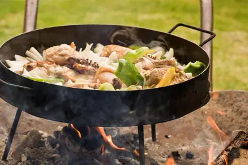

Pagina de EJemplo - Codo a Codo - Comision 53505 - Martin Ludueña
Cocina Serrana: Recetas de cocina rustica
Desde hace milenios, el hombre ha dominado el fuego con el unico proposito de transformar los alimentos tales como la carne, los cereales y las verduras en alimentos aptos para el consumo, como la misma alquimia intentando incansablemente complacer a su paladar.
Fuego Sagrado
El fuego, instrumento fundamental para esta alquimia de los alimentos, por el cual un simple proceso consta de someter el alimento al fuego directo para de esta forma conseguir transformar los distintos elementos en alimentos unicos, el fuego es quien da identidad a los alimentos y les ofrece los sabores unicos que el ser huamno busca constantemente como un placere ifinito de complacer el paladar.